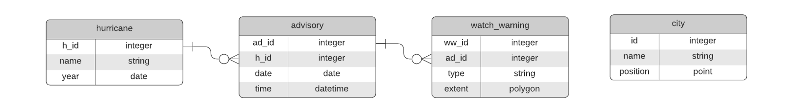

Visualization
Wednesday November 13th 1:30-5 p.m.
- Theme: Mapping Minds, Shaping the World
- Place: Richter Library 3rd Floor Conference Room
- Join: Student Digital Poster and Storymap Competition
- Submisstions: https://geography.as.miami.edu/events/gisday/workshops/
- Deadline November 8th
- Environmental/Social Justice and GIS
- Dr. Abigail Fleming
- University of Miami Environmental Justice Clinic, School of Law
- Spatial Joins Follow-up
(from week 8, especially Spatial Joins - TRI Sites to Census Tracts, Census Tracts to TRI Sites and Extract Elevation to Trees) - Student Presentations from Field
- Structured Query Language (SQL)
- Relational Database Management Systems (RDBMS)
- Joins: attribute and spatial
- Select, Transform, Save
- Web Mapping (if time permits)
- Storymaps
- Leaflet
- Entities and Attributes
Strength (Category – 1, 2, 3, 4, 5) is an aggregate categorical attribute that summarizes all windspeeds and maybe other stuff
Entities
And
Attributes
And
Relationships

- The Join: Relational and Spatial
The “Join” is a concept from the world of Relational Databases, SQL and set theory, but the term is used generally to talk about combining data from one or more entities based on the relationship between those entities. In the land of Relational Databases a Join is the intersection between two sets (tables/entities).
- SQL - Structured Query Language
Widely used even outside the world of strictly “relational” databases. Created to operate on Relational Databases to retrieve and manipulate data.
SQL is often used for data analytic purposes - to aggregate values, sort, group, etc.
SELECT watch_warning.extent, watch_warning.type
FROM hurricane, advisory, watch_warning
WHERE hurricane.name = “Ian”
AND hurricane.h_id = advisory.h_id
AND advisory.ad_id = watch_warning.ad_id
SELECT watch_warning.type, COUNT(*)
FROM hurricane, advisory, watch_warning
WHERE hurricane.name = “Ian”
AND hurricane.h_id = advisory.h_id
AND advisory.ad_id = watch_warning.ad_id
GROUP BY watch_warning.type
TROP STORM WATCH, 2
HURRICANE WATCH, 5
TROP STORM WARNING, 1
HURRICANE WARNING, 10
Analogous to a relational Join, but uses spatial attributes to accomplish the Join. GIS facilitates this kind of Join.
SELECT watch_warning.type, COUNT(*)
FROM hurricane, advisory, watch_warning
WHERE hurricane.name = “Ian”
AND hurricane.h_id = advisory.h_id
AND advisory.ad_id = watch_warning.ad_id
AND st_within(city.postion, watch_warning.extent)
GROUP BY watch_warning.type
TROP STORM WATCH, 1
HURRICANE WATCH, 1
TROP STORM WARNING, 1
HURRICANE WARNING, 2
- Story Maps
- ESRI Storymaps - New York Taxicab Terrain
- Knightlabs - Game of Thrones
- Mashups
- MapBox - LA Times California Fires
- Leaflet - Cordillera Huayhuash
- Web Applications
- ESRI - Hometown Maps
- Leaflet - MAP